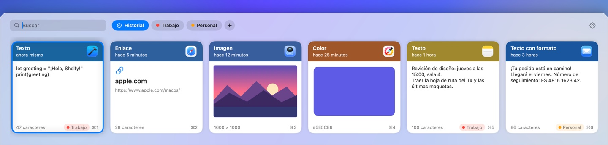

Todo lo que copias, a un atajo
Shelfy recuerda todo lo que copias: textos, enlaces, imágenes, archivos y colores. Pulsa ⌘⇧V y pega lo que quieras del historial.
Descargar en el Mac App Store
Un solo atajo
⌘⇧V abre un panel en la parte inferior de la pantalla. Elige una tarjeta con las flechas y pulsa Return para pegarla.
Etiquetas
Marca lo importante con etiquetas y cambia entre ellas con Tab. Los elementos con etiqueta se conservan para siempre.
Búsqueda
Empieza a escribir para encontrar cualquier cosa que hayas copiado.
Privado
Tu historial se queda en tu Mac. Sin cuentas, sin nube, sin red. Las contraseñas de los gestores de contraseñas nunca se guardan.
Tus reglas
Conserva el historial un día, un mes o para siempre, y bórralo cuando quieras.
Detalles cuidados
Un sonido suave al copiar, iconos de la app de origen, pegado sin formato con Mayúsculas+Return. En español, inglés y ruso.